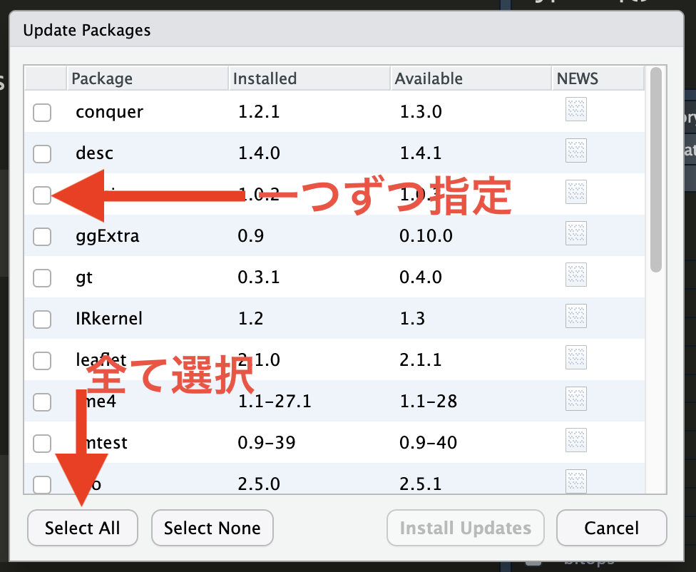

Code 01
install.packages("インストールするパッケージ名") Rには様々な関数（functions）が提供されている。算術平均値を求めるmean()、合計を求めるsum()、線形回帰分析を行うlm()、平均値の検定を行うt.test()などがあり、全てを列挙することはできない。しかし、データ分析の技術は日々発展し、Rがデフォルトで提供する関数では不可能ではないが、かなり長いコードが必要な分析を使わざる得ないケースもあろう。Rは開発元だけでなく、誰でも関数を作ることができる。通常なら数百行のコードが必要な分析を一行のコードで実行可能とする関数を多くのRユーザーが作ってきた。これらの関数を集めたのがパッケージである。Rにはグラフ作成に特化したパッケージ、機械学習に特化したパッケージ、テキスト分析に特化したパッケージなど、数千のパッケージが開発されている。このパッケージの豊富さがRの最大のメリットでもある。誰かが新しい分析手法を提案したら、数日内、あるいはその手法が論文として出版される前からRパッケージとして公開されるケースが多い。
Rの内蔵関数は料理における包丁のようなものである。包丁があれば理論上、食材を粉々にすることはできよう。料理の達人であれば、問題ないかも知れないが、我々のような一般人では時間もかかるし、途中でミスをおかすかも知れない。一方、ミキサーを使えばだれても簡単に食材を粉々にすることも出来るし、（ミキサーが不良でないなら）ミスの恐れもほぼない。このミキサーがRのパッケージのようなものだ。ミキサーとRパッケージの違いは、ミキサーの入手には金がかかる一方、Rパッケージは無料で入手できる点だ。
Rには数万以上のパッケージが存在し、Rをインストールするだけでも数十のパッケージが自動的にインストールされる。しかし、データ分析/ハンドリング/可視化の手法は日々発展しており、R内蔵パッケージだけでは対応が難しい (できないわけではない)。したがって、必要に応じて新しいパッケージを導入する必要があるが、パッケージのインストールするにはConsoleペインに以下のように入力する。
Code 01
install.packages("インストールするパッケージ名")前期の「ミクロ政治データ分析実習」では{tidyverse}パッケージのみ使用する予定である。ただし、本講義ようにセッティングされた環境を導入する場合、{tidyverse}は既に導入済みであるため、以下のコードは実行しなくても良い。
Code 02
install.packages("tidyverse")特定のパッケージをアップデートする方法はインストールと同じだが、一つ一つのパッケージが全て最新バージョンかどうかを確認するのは大変である。また、久々のアップデートで数十個のパッケージをアップデートする必要があるケースもあろう。この場合、RStudioの内蔵機能を使えば一瞬で更新可能なパッケージのリスト化、インストールができる。
手順1: PackagesペインのUpdateをクリックする。

手順2: アップデートしたいパッケージの左にチェックを付けるか、左下のSelect Allをクリックし、右下のInstall Updatesをクリックする。

インストール、またはアップデートの際、以下のようなメッセージが出力される場合がある。
There are binary versions available but the source versions
are later:
binary source needs_compilation
terra 1.5-17 1.5-21 TRUE
yaml 2.2.2 2.3.4 TRUE
Do you want to install from sources the packages which need compilation? (Yes/no/cancel)この場合、Consoleペイン上でYes、no、cancelのいずれかを入力してReturnキー (Enterキー)を押す必要がある。大文字と小文字は区別すること。どうしても最新のパッケージが欲しい場合はYesを入力すれば良いが、インストールに時間がかかる場合がある。一方、noを入力した場合は、若干古いバージョンがインストールされるが、インストールに必要な時間が短いため、基本的にはnoでも問題ないだろう。cancelを入力した場合はアップデートが全てキャンセルされる。
Rを削除して再インストールしたり、（クラウド版のRStudioなら）分析環境を新しく立ち上げない限り、パッケージのインストールは1回で十分だ。しかし、library()関数でパッケージを読み込む作業は、R（RStudio）を開く度に行う必要がある。つまり、読み込んだRパッケージはRを終了すると一旦外されることとなり、改めてRを開いたらもう一度読み込む必要がある。
『私たちのR』の第5章「Rパッケージ」: https://www.jaysong.net/RBook/packages.html